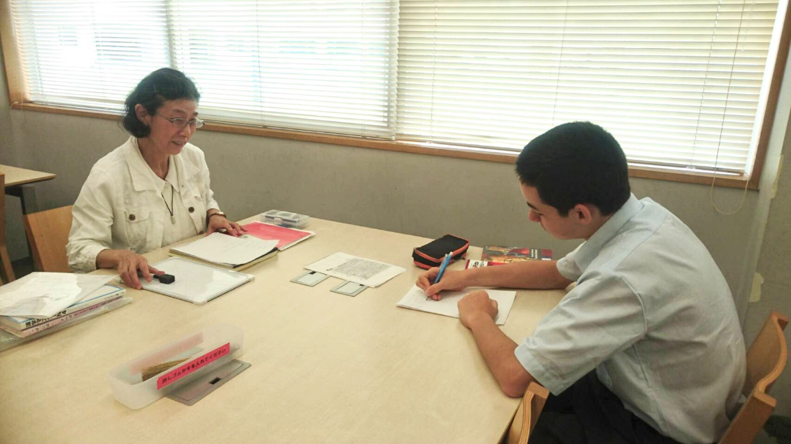
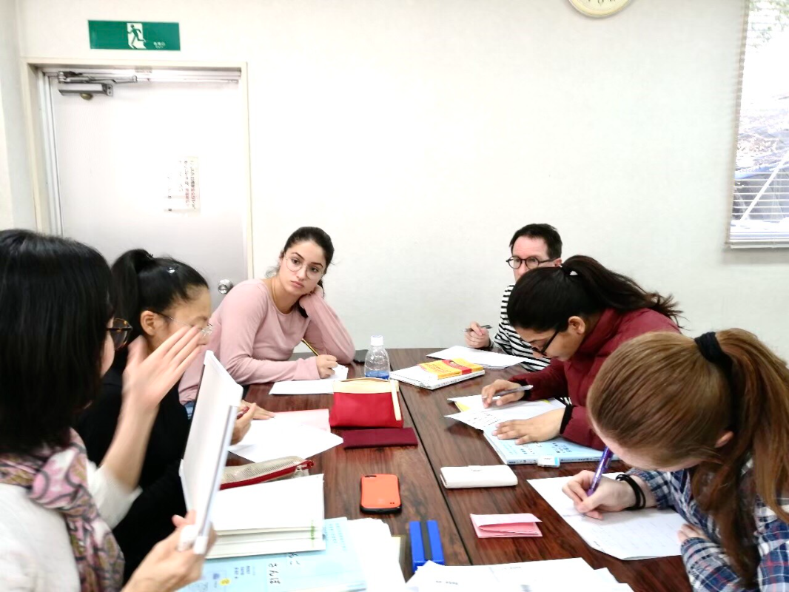
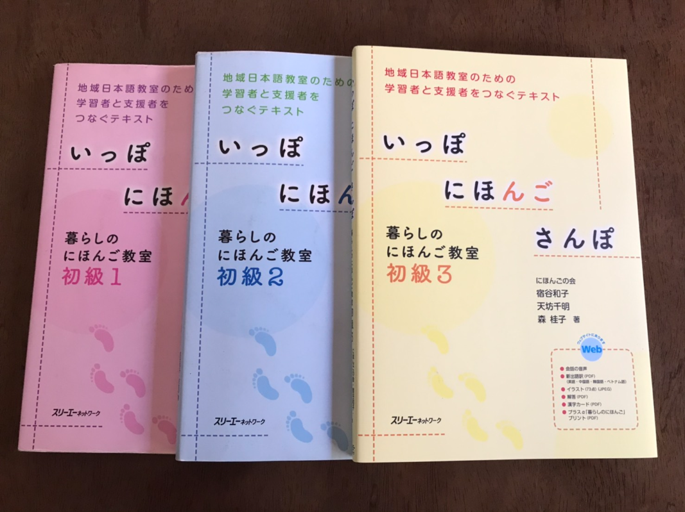
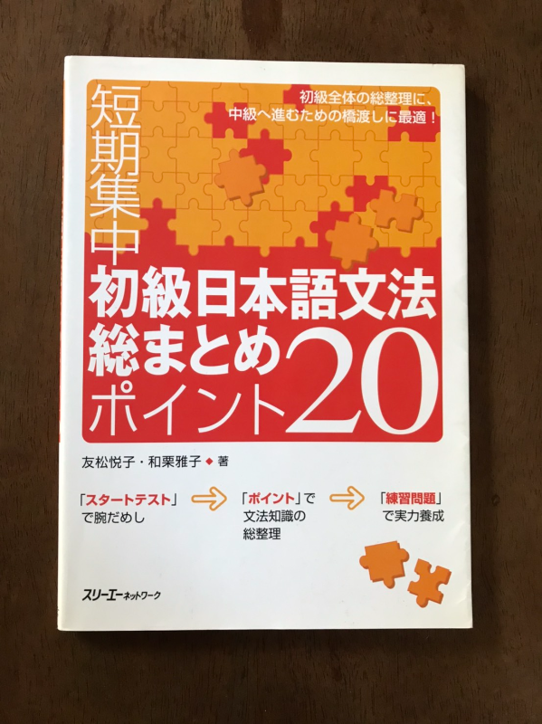

Classes
Type of Class -No.1-
Private Lesson
Place: At a teacher’s place or student’s place (Needs to be in Kamakura city or cities next to Kamakura) Time:TBD on weekdays Fee: ¥2,000 for 90 minutes (if at a teacher’s place), ¥3,000 for 90 minutes + transportation fees (if at a student’s place) *Online classes are only available at the moment due to Covid-19. Type of Class -No.2 -
Group Lesson
Place: NPO Centre Kamakura (18-10 Onari-machi, Kamakura, Kanagawa). 3 minute-walk from Kamakura station Time: Monday 9:00 – 10:30 (Elementary and Pre-intermediate classes), 10:30 – 12:00 (Beginner and Upper-intermediate classes) Fee: Free of charge *Online classes are only available at the moment due to Covid-19. Level
Beginner
- This is the first time to learn Japanese.
Elementary
- One is able to read Hiragana and Katakana.
- One is able to have conversations about everyday topics slowly.
Pre-Intermediate
- One is able to read Hiragana, Katakana and basic Kanji.
- One is able to have conversations about everyday topics.
Upper-Intermediate
- One is able to read and understand slightly difficult writings.
- One is able to listen and understand conversations spoken at near-natural speed.
Textbooks we use
For Beginners


For Intermediates